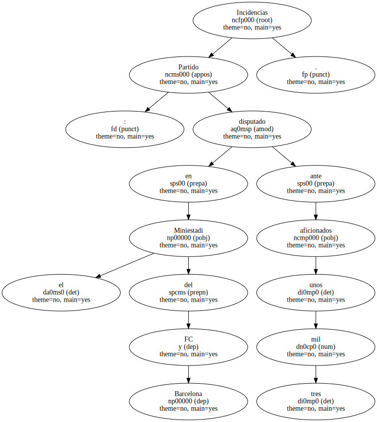
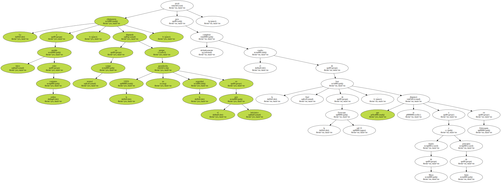
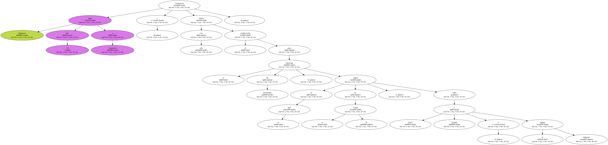
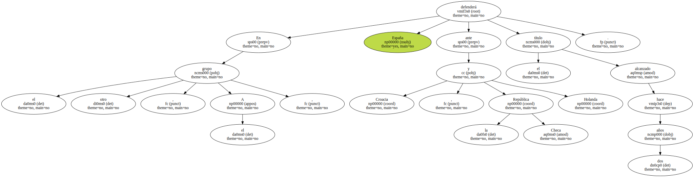
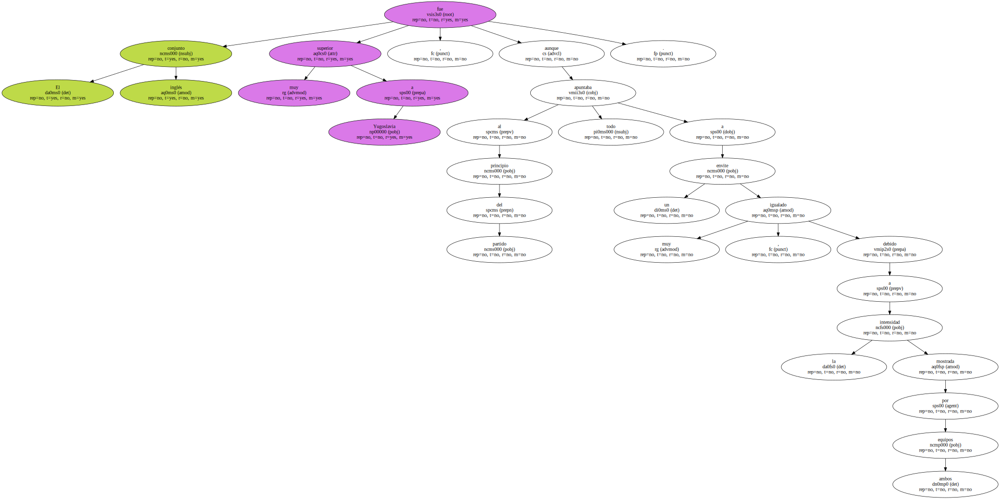
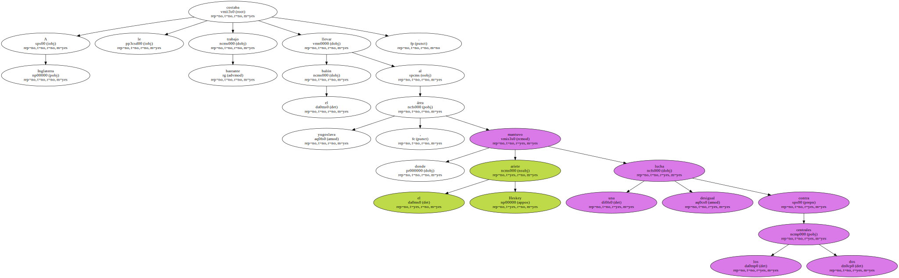
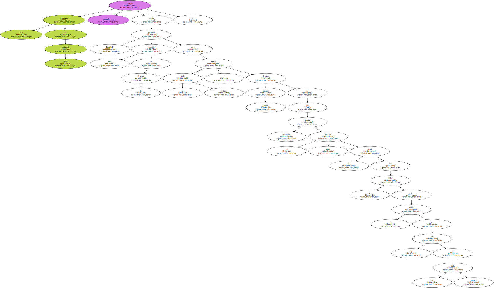
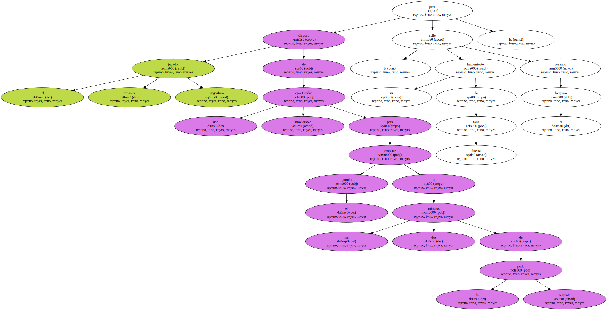
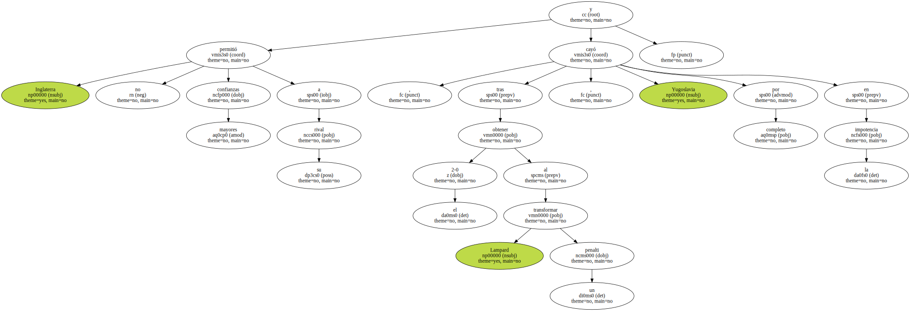
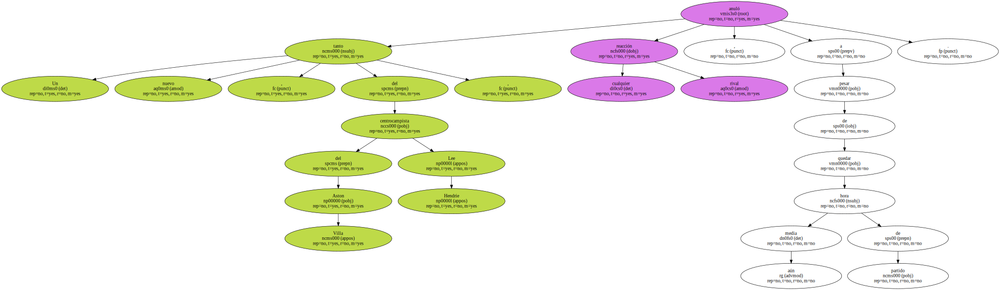

Incidencias : Partido disputado en el Miniestadi del FC Barcelona ante unos tres mil aficionados.
La eliminatoria a partido único entre ambos conjuntos , disputada en campo neutral porque la UEFA no garantizaba la seguridad en el país balcánico , sirvió para completar definitivamente el cuadro de la fase final de la Eurocopa sub`21 , que se disputará a finales de Mayo y principios de Junio en Eslovaquia.
Comentario : Inglaterra ganó por 3-0 a Yugoslavia y con ello obtuvo la clasificación para la Eurocopa de Eslovaquia , en la que jugará en el Grupo B , junto a Italia , Turquía y el equipo anfitrión.
En el otro grupo , el A , España defenderá ante Croacia , la República Checa y Holanda el título alcanzado hace dos años.
El conjunto inglés fue muy superior a Yugoslavia , aunque al principio del partido todo apuntaba a un envite muy igualado , debido a la intensidad mostrada por ambos equipos.
A Inglaterra le costaba bastante trabajo llevar el balón al área yugoslava , donde el ariete Heskey mantuvo una lucha desigual contra los dos centrales.
Por su parte , Yugoslavia aplicó el pase corto y en profundidad para poner en aprietos al meta Richard Wright.

Este panorama de relativa igualdad se rompió cuando Campbell aprovechó una indecisión de la defensa para marcar el primer gol , pocos minutos después de que Stankovic lanzara un duro disparo que acabó con el balón en el lateral de la red de la meta inglesa.
El mismo jugador yugoslavo dispuso de una inmejorable oportunidad para empatar el partido a los dos minutos de la segunda parte , pero su lanzamiento de falta directa salió rozando el larguero.
Inglaterra no permitió mayores confianzas a su rival y , tras obtener el 2-0 al transformar Lampard un penalti , Yugoslavia cayó por completo en la impotencia.
Un nuevo tanto , del centrocampista del Aston Villa Lee Hendrie , anuló cualquier reacción rival , a pesar de quedar aún media hora de partido.
